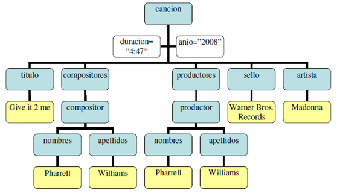

UD2 - Actividad 2 - Enunciado
Pulsa aquí para visualizar: UD2 - Actividad 2 - Enunciado
UF2217. UD2. Actividad 2. Caso práctico: ALMACENAMIENTO DE INFORMACIÓN EN UN CD.
Enunciado (Descripción)
En un supuesto práctico, se tiene necesidad de almacenar información con la posibilidad de ser presentada de distintas formas. Por ello se pide utilizar xml. La información en cuestión son cd`s de música. De los cuales se desea saber su año de publicación, duración y título. Estos cd´s se componen de ‘canciones’ que deben seguir el siguiente esquema:

UF2217_UD2_Actividad 2_Caso práctico_AA.rar
1. Construir un DTD que siga la información descrita.
2. Construir un XML a modo de ejemplo, que sea válido con la DTD construida y que contenga la siguiente información:
Título del CD: Songs of inocence
Duración CD: 01:12
Año: 2015
Dicho CD contiene estas dos canciones:
Canción 1:
Titulo: "Every breacking wave"
Sello: "Warner"
Artista: "U2"
Nombre Compositor: Paul
Apellido Compositor: Hewson
Nombre Productor: ”Brian”
Apellido Productor: “Eno”
Canción 2:
Titulo: " Miracle"
Sello: "Warner"
Artista: "U2"
Nombre Compositor: Paul
Apellido Compositor: Hewson
Nombre Productor:”Daniel”
Apellido Productor: “Lanois”
3. Una vez construido el documento xml construir expresiones XPATH que den respuesta a las siguientes preguntas:
a) Duración del cd.
b) Nombre de los productores.
c) Título de las canciones.
d) Todos los atributos de CD.
e) Acceso nodo ‘nombre’ hijo de ‘compositor’.
Preguntas / Actividades a realizar
Construir DTD que represente la información solicitada.
Crear el XML de ejemplo y utilizar la DTD anterior para su validación, puede ser interna o externa.
Con ‘XML Copy Editor’ comprobar validez.
Construir expresiones Xpath que den solución a las preguntas planteadas.
Se deben de insertar capturas de pantalla del proceso realizado para construir la DTD solicitada y para construir el documento XML.